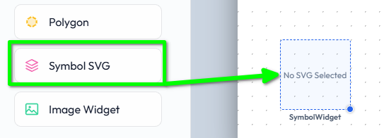
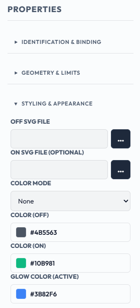
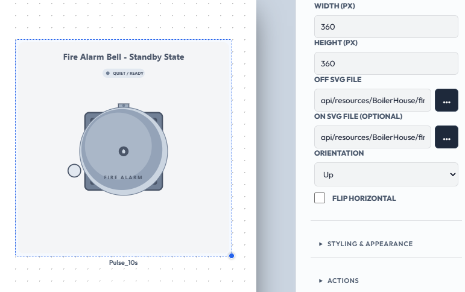
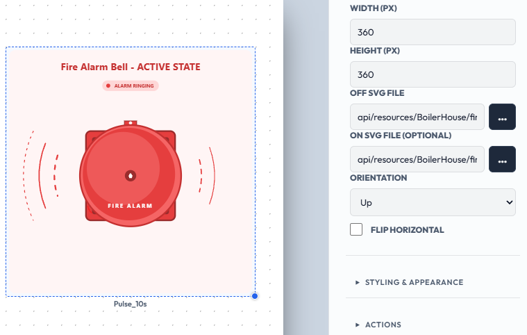
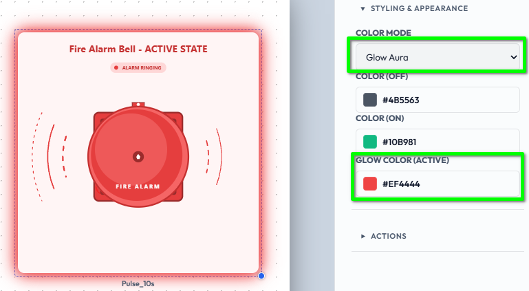
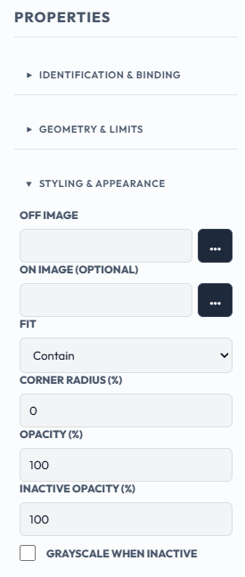
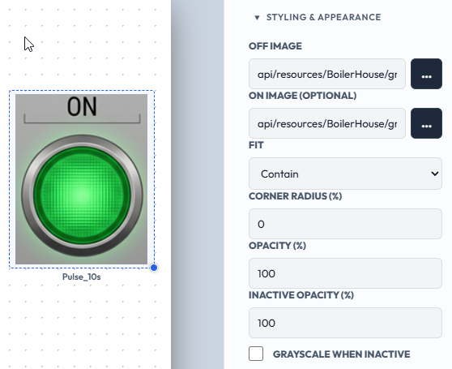
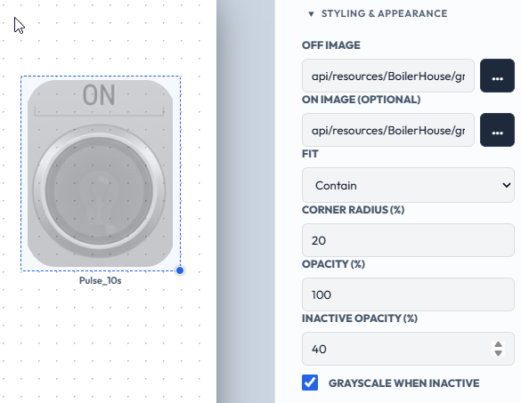

SentinelSCADA › Tutorial › Chapter 9
The built-in pumps, valves and tanks from Chapter 8 cover common equipment. Every plant also has things they do not: a company logo, a special machine, a symbol from your own P&ID library. The Symbol SVG widget lets you drop in any vector artwork of your own. SVG is a vector format, so the artwork stays sharp at any size, from a small icon to a full-width or even full screen diagram, and it can change with a tag just like the built-in objects.
For this tutorial we will continue with our BoilerHouse project, though on the Settings screen we added in Chapter 7. From the File menu choose Load Screen…, select Settings and press Load Screen.
From the Toolbox, in the Process & Symbols group, drag a Symbol SVG onto the canvas.

Its properties are in two sections. In Geometry & Limits:
In Styling & Appearance:
.svg file (up to 5 MB), and it uploads to the current project.
Bind the widget to a tag and it switches between its Off and On appearance as the tag changes.
An example: a fire bell drawn as two files, one grey (off) and one lit red (on). Upload the grey file as the Off SVG and the red lit file as the On SVG, bind the widget to a tag, our demo tag Pulse_10s here for expedience, and the bell alternates as the tag changes.
Alarm bell, normal:

Alarm bell, active:

To source or create SVGs we have a wealth of resources, from online open source libraries and paid content, through SVG editing tools, and quite simply, we can ask any modern AI agent such as Claude or Gemini to produce the raw SVG files to the specification and prompt we provide. There are of course editors too, free and paid.
XML Control's SimpleVG is another tool to consider: a browser-based vector editor built for SCADA and HMI diagrams, which reads and writes plain SVG files, and can also export PNG for use in the Image widget (discussed below).
Color Mode controls how the colour properties are applied to the artwork:

Every symbol has an Orientation that turns it in 90 degree steps. The turn is around the symbol's own centre; it does not redraw the artwork or change the widget's size or position. Custom symbols start at Up, exactly as uploaded.
Some artwork is a true mirror image rather than a rotation. For that, tick Flip Horizontal. Flip mirrors the artwork first, and Orientation then turns the mirrored result, so the four Orientation steps behave the same whether Flip is on or off.
Symbols are cleaned automatically when they are drawn, with nothing to configure. For predictable results:
@import) is removed. The rest of the symbol still draws; only that part is lost. This keeps symbols portable on isolated plant networks and stops them making outbound requests.onclick are removed..acme-pump-body, not .body. Style classes apply across the whole canvas, so a common name can clash with another symbol's.If a symbol looks wrong after import, a missing background or an unstyled shape, check it for external references first.
Each widget accepts only its own file types, up to 5 MB per file.
Use Symbol SVG for logos, equipment and anything drawn. Use the Image widget for photographs. The Image widget also has an Off Image and an optional On Image for a tag-driven change, like the Symbol.

Unlike the Symbol, the Image widget's picture cannot be recoloured, but its Styling & Appearance section has options for how it is shown:
Contain (the default) shows all of it with its proportions kept. Cover fills the box and crops any overhang. Stretch fills the box and distorts the picture. None shows it at natural size, centred.Here is the section with its default options:

Here the same lamp has a Corner Radius of 20, an Inactive Opacity of 40 and Grayscale When Inactive ticked. While the tag is off the lamp is dimmed, grey and softly rounded; when the tag turns on it returns to full colour.

So far our screens have run on the simulator. In the next chapter we will add a real Modbus device and set up some tags for real.